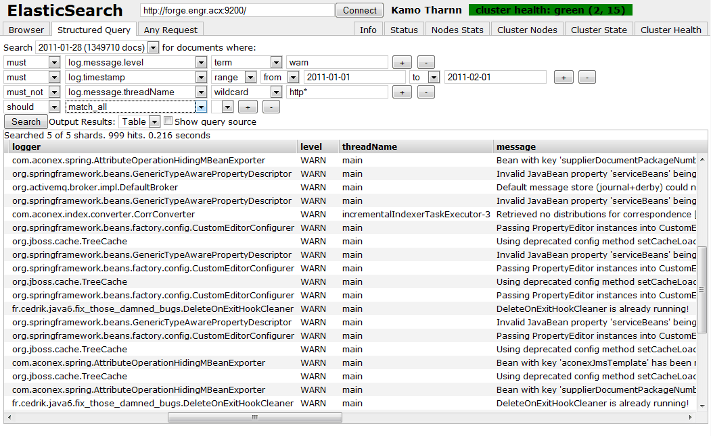
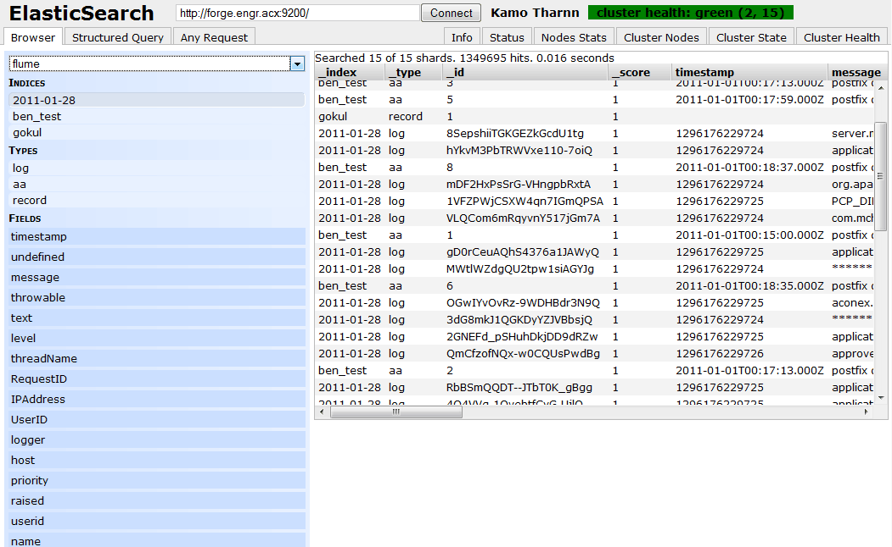
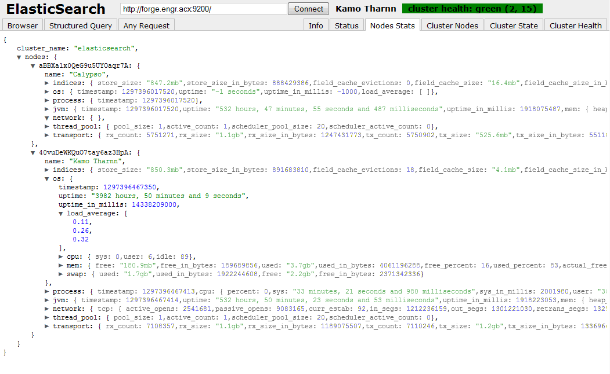

What is this?
elasticsearch-head is a web front end for browsing and interacting with an Elastic Search cluster.
elasticsearch-head is hosted and can be downloaded or forked at github
contact me via github or on twitter @mobz
Gettings Started
git clone git://github.com/mobz/elasticsearch-head.git- Open index.html in a browser. A modern browser is required to use es-head
- By default es-head will immediately attempt to connect to a cluster node at http://localhost:9200/.
Enter a different node address in the connect box and click 'Connect' if required.
General Utility
es-head has a three major operations.
- A couple of search interfaces that allow you to query the cluster a retrieve results in raw json or tabular format
- Several quick access tabs that show the status of the cluster
- An input section that allows arbitrary call to the RESTful API to be made. This interface includes several options that can be combined to produce interesting results;
- Select request method (get, put, post, delete), json query data, node, and path
- JSON validator
- Ability to repeat requests on a timer
- Ability to transform the result using javascript expressions
- Ability to collect results over time (using timer), or compare results
- Ability to chart the transformed results in a simple bar graph (including time series)
* caution *, you can destroy and corrupt data from this interface if you are not careful
es-head will attempt to remember the node that it connects to using html5 features, however this only works over http(s).
If you would like to create a link to a particular cluster use the url form .../elasticsearch-head/index.html?base_uri=http://cluster.example.com:9200/
Screenshot time!


